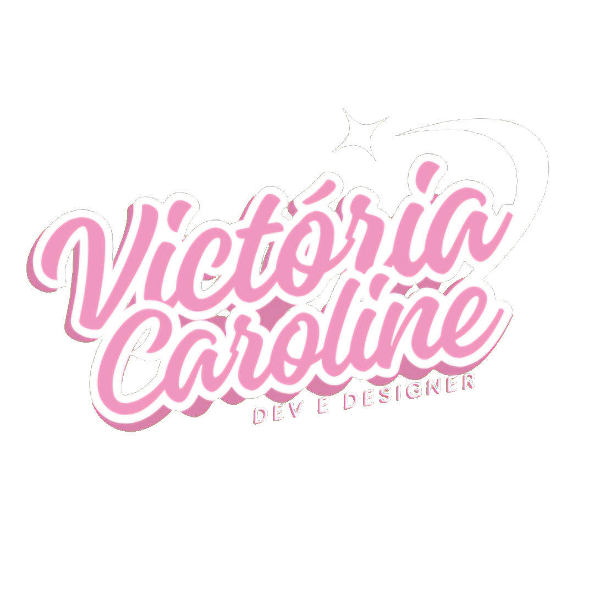
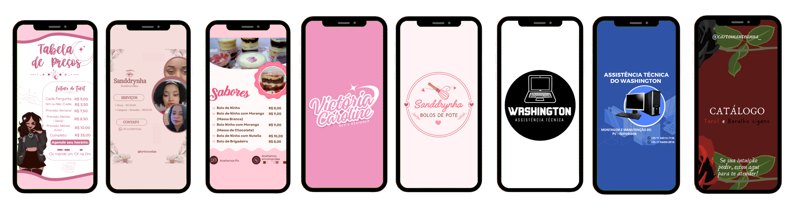

Projeto fotográfico com foco em arquitetura, paisagens e detalhes urbanos, priorizando composição, luz natural e estética visual. O site adota um layout minimalista e interativo, onde as imagens são o elemento principal e revelam informações ao passar o mouse.
FeiFood é um sistema de gerenciamento de pedidos desenvolvido em Python como projeto acadêmico.
Mini projetos criados na aulas de Full-Stack na FEI, para explorar lógica de programação, interação com o usuário e comportamento dinâmico da interface usando JavaScript.
Trabalhos de design focados em criação visual, tratamento de imagens e desenvolvimento de artes para anúncios e produtos, unindo estética, clareza e identidade visual.
